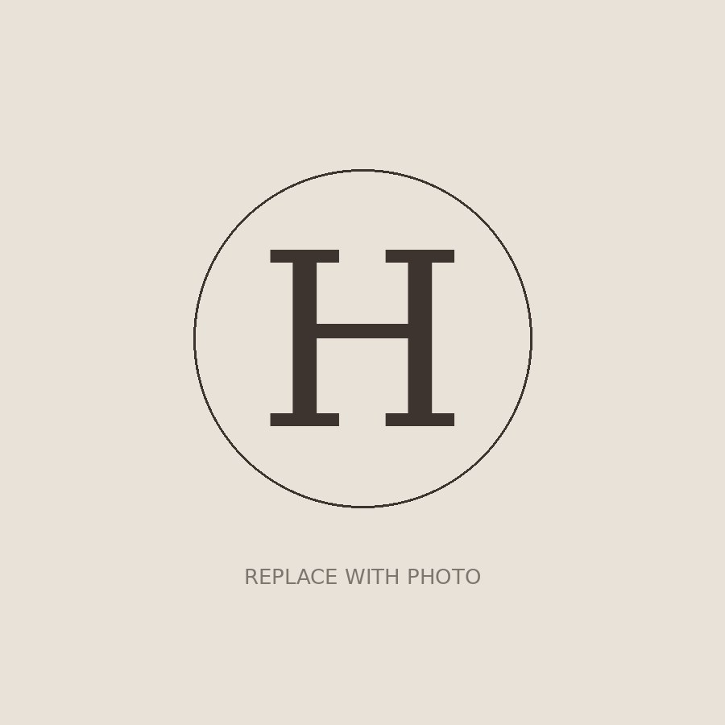
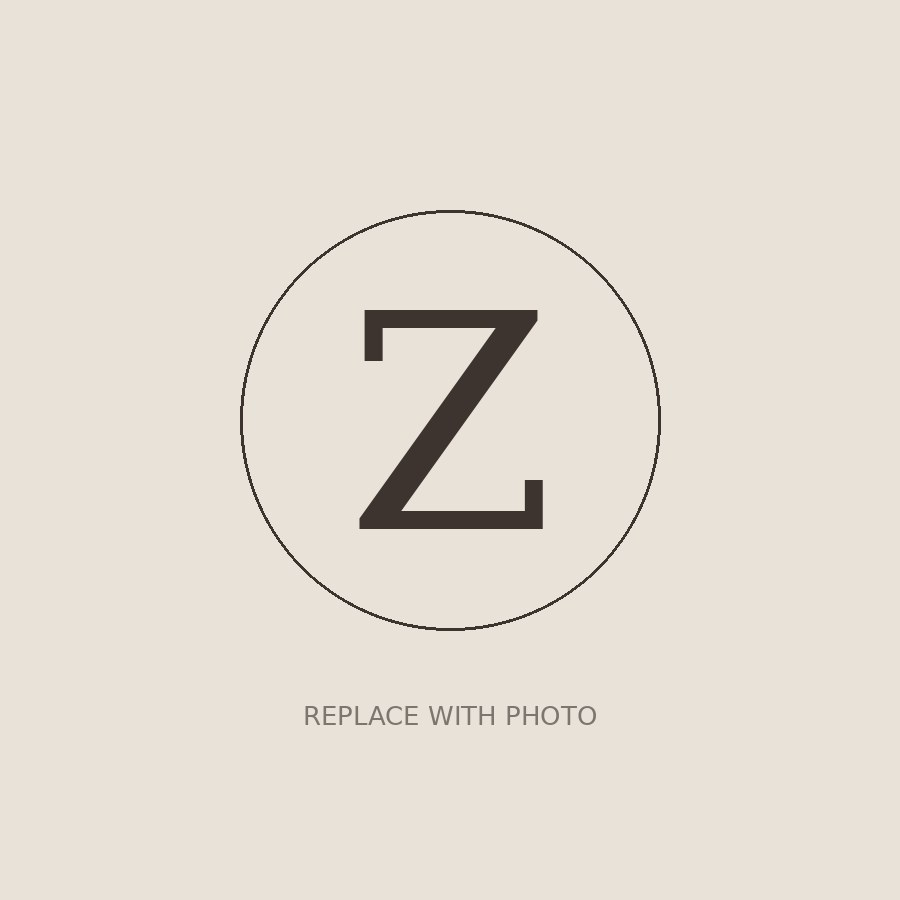

Shaped by nature,
finished by hand.
Bottle openers and corkscrews made from red deer antler — shed naturally on the hill, collected by hand, and set into polished steel. No two are ever the same.
Shop the CollectionFrom £25 · Free of harm to any animal
Naturally shed
red deer antler.
Every spring, red deer drop their antlers — it's a natural part of their year, and they grow a new set the next. We walk the hill and gather what's been shed. Nothing is cut, and no animal is ever harmed.
Because each antler grew on a different animal in a different year, every piece carries its own colour, weight and grain. Yours will be slightly unlike anyone else's — that's the point.
Mauldslie Farm,
Midlothian.
The antler comes from a family farm in the Moorfoot Hills near Temple, looking out over Gladhouse Reservoir. It's a working landscape with a native herd of red deer — the same hills the material is gathered from each year.
Four steps, by hand.
We make everything ourselves, in small batches. No factory, no production line — just two of us, a workbench, and a pile of antler.
Collected
Shed antler gathered from the hill through spring, then sorted by size, shape and condition.
Cut & matched
Each piece chosen for its part of the antler — the tine, the beam, the burr — then cut and cleaned.
Fitted to steel
Set onto a hand-polished stainless opener or worm, anchored to sit solid for good.
Finished & checked
Sanded, sealed and checked by hand before it's boxed and sent to you.
Just the two of us.
Stag & Steel is a two-person operation. We do the lot ourselves — from the hill to the bench to the box on your doorstep.

Harry
Does most of the hands-on work — sorting antler, cutting, fitting and finishing. If it's in your hands, he held it first.

Zach
Looks after how things look and runs the shop, the orders and everything behind the scenes.
The First Collection


Made to order, in small batches
Because it's just the two of us, pieces are made a few at a time. Allow up to a week before dispatch.
UK delivery, tracked
Flat £4.50 shipping across the UK via Royal Mail, with tracking. You'll get an email when it's on its way.
Not right? Send it back
If it's not for you, return it unused within 14 days for a refund. Get in touch and we'll sort it.
A real place, a real pair of hands
Questions before you buy? Email hello@stagandsteel.co.uk — you'll reach one of us.